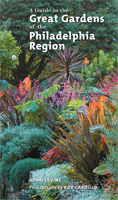

<body bgcolor="#FFFFFF" text="#000000" link="#0000FF" vlink="#CC0000" alink="#CC0000"><center><hr width="350" size="1" align="center" noshade>A comprehensive and beautifully illustrated guide, chock full of inside information<hr width="350" size="1" align="center" noshade><p><a href="https://cdcshoppingcart.uchicago.edu/Cart/ChicagoBook.aspx?ISBN=9781592135103&&PRESS=temple" target="_top">Buy this book!</a> | <a href="https://cdcshoppingcart.uchicago.edu/Cart/Cart.aspx?PRESS=temple" target="_top">View Cart</a> | <a href="https://cdcshoppingcart.uchicago.edu/Cart/Cart.aspx?PRESS=temple" target="_top">Check Out</a></p><p></p></center><!--none//--><h1>A Guide to the Great Gardens of the Philadelphia Region</h1>
<h3>text by Adam Levine, photographs by Rob Cardillo</h3>
<P>paper 1592135102 $25.95, Feb 07, <FONT COLOR=#990033>Available</FONT>
<br>Electronic Book 1592135110 $25.95 <FONT COLOR=#990033></FONT>
<BR> 192 pp
5.375x9.125
1&nbsp;map(s) 195&nbsp;color&nbsp;illustrations
</P><h3 align="center"><P><font color="#996633">Rob Cardillo received a Silver Award of Achievement for best book photography in the Garden Writers Association Media Awards Program,
2008</font></P>
<P><font color="#996633">Received a Gold Award of Achievement for best photography (overall) in the Garden Writers Association Media Awards Program,
2008</font></P>
<P><font color="#996633">Received a Gold Award of Achievement for best book in the Garden Writers Association Media Awards Program,
2008</font></P>
</H3>
<BLOCKQUOTE><I><i>"I am thrilled to finally see such a thorough and useful guide to the gardens of the Delaware Valley. A Guide to the Great Gardens of the Philadelphia Region will make a wonderful addition to any garden lover's library. Adam Levine and Rob Cardillo are the perfect guides-bringing these gardens to life in word and image. Their knowledge about the gardens in our area makes this an invaluable book indeed."</i></i><br><b>&#151Jane G. Pepper</b>, President, Pennsylvania Horticultural Society</I></BLOCKQUOTE>
<p>
Finally, for every resident and visitor to the region, a comprehensive guide to the gardens of eastern Pennsylvania, southern New Jersey, and northern Delaware. Magnificently illustrated with nearly 200 full color photographs, <i>A Guide to the Great Gardens of the Philadelphia Region</i> provides essential information on how to locate and enjoy the finest gardens the area has to offer.
<p>
As the horticultural epicenter of the United States, Philadelphia and the surrounding towns, suburbs, and countryside are blessed with more public gardens in a concentrated area than almost any other region in the world. Stretching from Trenton, New Jersey through Philadelphia and down to Newark, Delaware, this area (often called the Delaware Valley) offers more horticultural riches than a visitor can possibly see even in a couple of weeks of hectic garden hopping.
<p>
In <i>A Guide to the Great Gardens of the Philadelphia Region</i> you will find:
<p>
- detailed coverage of almost 100 gardens;<p>
- maps to indicate where area gardens are in relation to each other to plan day trip itineraries;<p>
- key information about each major garden, including hours, fees, time needed for a tour, history, acreage, and special features;<p>
- over a dozen gardens that have never before been featured in any garden guidebook;<p>
- arranged by interest, to help guide readers to gardens that will most meet their needs;<p>
- notations about historical houses, cafes/restaurants, gift shops, and children's features at each major garden
<BR>&nbsp;<h2>Excerpt</h2><P>Excerpt available at <a href="http://www.temple.edu/tempress">www.temple.edu/tempress</a></p>
<BR>&nbsp;<h2>Reviews</h2>
<i>"The Philadelphia area is the garden capitol of North America with an unmatched richness in public gardens. A Guide to the Great Gardens of the Philadelphia Region by Adam Levine and Rob Cardillo is a complete guide with up to date and practical information for garden lovers in the Delaware Valley. Whether you want to learn new gardening ideas or simply reconnect with family and friends in a beautiful, peaceful setting, this beautifully illustrated reference will help you choose and locate the right garden for you. It is a must-have guide for both local gardeners and visitors to the region. This is a great service to our public gardens!"</i><br><b>&#151Paul W. Meyer, F. Otto Haas</b> Director, <i>The Morris Arboretum of the University of Pennsylvania
</i>
<p><i>"[A] smart, beautifully illustrated guide to more than 40 gardens and dozens of other horticultural destinations in Southeastern Pennsylvania, South Jersey, and northern Delaware....organized by region and, in a helpful twist, ranked according to what Levine and Cardillo think they have to offer. Cardillo's 195 color illustrations are an artful accompaniment, whether impressionistic scenes at Mount Cuba Center or small cameos of pink native dogwood." </i><br><b>&#151Virginia A. Smith,</b> <i>Philadelphia Inquirer
</i>
<p><I>"The text, by Adam Levine, gives eloquent descriptions of each garden...Beautiful photographs by Rob Cardillo accompany most descriptions and highlight aspects of the gardens. This is a good resource for those looking for daytrips with a focus on gardens."
</I><br>&#151<b><I>The Allentown Morning Call</I></b>
<p><I>"The book includes the history of prominent sites along with useful visitor information." </I><br>&#151<b><I>The New Jersey Courier Post</I></b>
<p><I>"An hour at a beautiful garden can pique a child’s interest in flowers...Levine provides detailed coverage of more than 40 area public gardens and info about dozens more in </i>A Guide to the Great Gardens of the Philadelphia Region<i>. With more than 200 color photos by Rob Cardillo, the book organizes gardens geographically, making those near you easy to find." </I><br>&#151<b><I>Metro Kids</I></b>
<p><I>"It is guaranteed to delight both experts and amateurs alike with valuable information on where to go, when to go, and what to see."</I><br>&#151<b><I>Bucks County Town and Country</I></b>
<BR>&nbsp;<h2>Contents</h2><P>
<p>CONTENTS
<p>1. Introduction<br>
2. How to Use This Book
<p>Garden descriptions
<p>1. Central<br>
2. Central Philadelphia<br>
3. South<br>
4. West<br>
5. North<br>
6. More Gardens (Community, Private)<br>
7. Garden Visit Hints<br>
<p>Back Matter<br>
1. Maps<br>
2. Acknowledgements<br>
3. Index<br>
</P><BR>&nbsp;<H2>About the Author(s)</H2>
<table><tr><td valign="top"><img src="/tempress/authors/1851_au1.gif" height="90" width="75"></td><td width="100%" valign="middle"><p><b>Adam Levine</b> is an award-winning garden writer whose work has appeared in many regional and national magazines. He is also co-author of The Passion for Gardening and The Philadelphia Flower Show. He lives and gardens in Media, Pennsylvania. His website is www.PhillyGardenGuide.com.</P></td></tr></table><table><tr><td valign="top"><img src="/tempress/authors/1851_au2.gif" height="90" width="75"></td><td width="100%" valign="middle"><p><b>Rob Cardillo</b> is a Philadelphia-based professional garden photographer. Formerly the Director of Photography at Organic Gardening magazine, his work now appears in Garden Design, Horticulture, Better Homes and Gardens, and numerous other magazines. He has authored two books and was the photographer for Flowers White House Style, HGTV Landscape Makeovers and The Perennial Gardener's Design Primer. His website is www.robcardillo.com</P></td></tr></table>
<BR><H2>Subject Categories</H2>
<p><A HREF="/tempress/philly.html" TARGET="_top">Philadelphia Region</a>
<BR><A HREF="/tempress/nature.html" TARGET="_top">Nature and the Environment</a>
</p>
<p align="center"><a href="https://cdcshoppingcart.uchicago.edu/Cart/ChicagoBook.aspx?ISBN=9781592135103&&PRESS=temple" target="_top">Buy this book!</a> | <a href="https://cdcshoppingcart.uchicago.edu/Cart/Cart.aspx?PRESS=temple" target="_top">View Cart</a> | <a href="https://cdcshoppingcart.uchicago.edu/Cart/Cart.aspx?PRESS=temple" target="_top">Check Out</a></p><p><font face="Arial" size="1"><a href="copyright.html" onMouseOver="window.status='Web Copyright Policy';return true;" onMouseOut="window.status=''" title="Web Copyright Policy">&copy;</a> 2015 <a href="http://www.temple.edu" target="new" onMouseOver="window.status='Link to Temple University home page';return true;" onMouseOut="window.status=''" title="Link to Temple University home page">Temple University</a>. All Rights Reserved. http://www.temple.edu/tempress/titles/1851_reg.html</font></p>